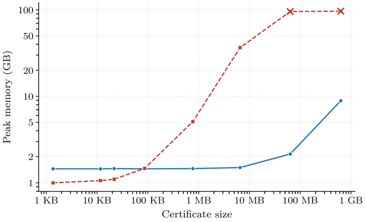

Builds lrat-catcher, a Lean tool that imports streamed or chunked LRAT SAT certificates as Lean theorems using Lean core's verified LRAT checker via reflection.
Abstract
If the certificate produced by a SAT solver is checked by a verified checker, we get a verdict which convinces. But this verdict cannot be named, reused as a lemma, or composed with other formal developments. We propose the tool lrat-catcher, which turns a certificate into a Lean theorem. It checks the certificate as a stream while the solver is still running. Hence the certificate is not required to be saved to a file. Additionally, our tool makes Lean core's verified LRAT checker resumable so that its state can be serialized. We prove that checking divided at such a state still properly refutes the original formula. We propose two import modes. The stream mode reads the certificate from a pipe in blocks and checks it on the fly in memory. The file mode imports a stored certificate in chunks. If interrupted, it rechecks only the chunks it has not yet completed. The soundness theorem for the stream mode guarantees that a garbled or adversarial stream can only fail the check but not yield a false theorem. We find that with compaction at chunk boundaries, the memory required depends only on the live clause set, not on the certificate size. Our tool supports cube-and-conquer and formulas derived by preprocessing, to still form Lean proofs of the original formula. We provide several end-to-end case studies on well-known combinatorial problems. A larger scaling experiment on the empty-hexagon problem shows that 174 TB of certificates can be imported into Lean via streaming.
Problem
SAT solver verdicts checked by verified external checkers cannot be named, reused as lemmas, or composed inside a proof assistant. Mathlib's lrat_proof lacks the RAT rule and runs out of memory on large instances. Lean core's verified LRAT checker is only reachable through bv_decide.
Approach
lrat-catcher exposes Lean core's verified LRAT checker as standalone import commands with native or kernel reflection. It makes the checker resumable with serializable state, and proves that checking split at such states still refutes the original formula. A stream mode checks certificates from a pipe in blocks, and a file mode imports stored certificates in restartable chunks, with compaction at chunk boundaries. A composition theorem handles cube-and-conquer runs and preprocessed formulas inside Lean, and verified encodings lift results to problem statements.
Results
End-to-end Lean theorems are obtained for Schur numbers S(3)=13 and S(4)=44 and Ramsey numbers R(3,3)=6 and R(4,4)=18. Memory depends on the live clause set rather than certificate size, and native reflection scales where lrat_proof exhausts memory. A scaling experiment streams 174 TB of empty-hexagon certificates into Lean.

Figure 1: Peak memory against certificate size, across the pigeonhole and Schur benchmark instances of Table 1 , for the two in-Lean import paths: \blacksquare native reflection and \blacksquare Mathlib ’s lrat_proof . Native reflection stays within an ordinary Lean process, whereas the explicit-proof-term import of lrat_proof grows with the embedded formula; a cross ( \times ) marks a run that th
Instance
Certificate
Native
Kernel
cake_lpr
lrat_proof
php(4,3)
1.4 KB
7.7
17.6
0.3
8.0
Schur S(3)
22 KB
13.8
245
0.3
9.6
php(7,6)
87 KB
14.8
DNF
0.4
12.9
php(10,9)
63 MB
13.2
–
3.1
1212†
Schur S(4) mono.
628 MB
77
–
27.4
7944†
Import cost by method (time; – = not run, DNF = did not finish; † as marked in source)